Meddbase supports the setup of Single Sign-On (SSO) using SAML2 protocol or OpenID Connect (OIDC). This enables users to log into their Meddbase instance via SSO. This also disables any local sign ins (not via SSO).
For information on configuring SSO for OH portal employee companies, see How to configure Single sign-on (SSO) for your OH portal employee companies.
This article:
To use this article and undertake configuration, you need:
The SSO is set up at the chamber level. When a User tries to access the application, Meddbase finds the identity provider (Azure AD) to authenticate the User. If the User is not signed in, Azure AD authenticates the user and generates a SAML token. Meddbase then generates a SAML 2.0 AuthnRequest and redirects the User's browser to the Azure AD SAML single sign-on URL. Azure AD posts the SAML response to Meddbase via the User's browser and Meddbase verifies the SAML response and subsequently completes the User sign-in.
Click here for more details on the Single sign-on SAML protocol.
The SSO configuration process requires admin configuration in your organisation's Azure AD (or similar) provider account. There are also configuration steps you need to take in your Meddbase chamber.
For simplicity, all steps/tasks required in both environments and the exchange of information between them have been put in a single, chronological list below:
1. Login to portal.azure.com and select Azure Active Directory under Azure services
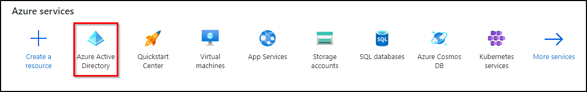
2. Navigate to Enterprise applications
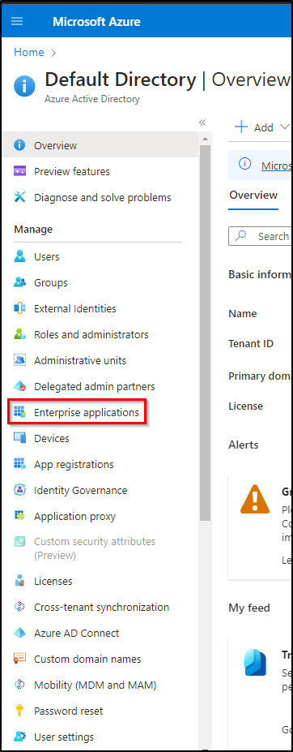
3. Click New Application
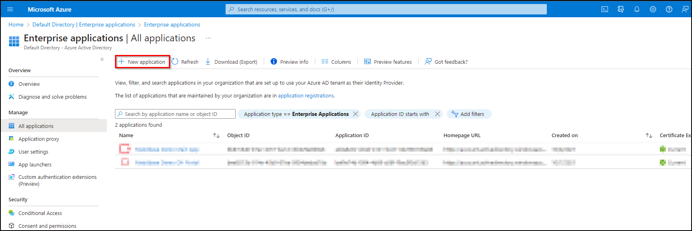
4. Click Create your own application
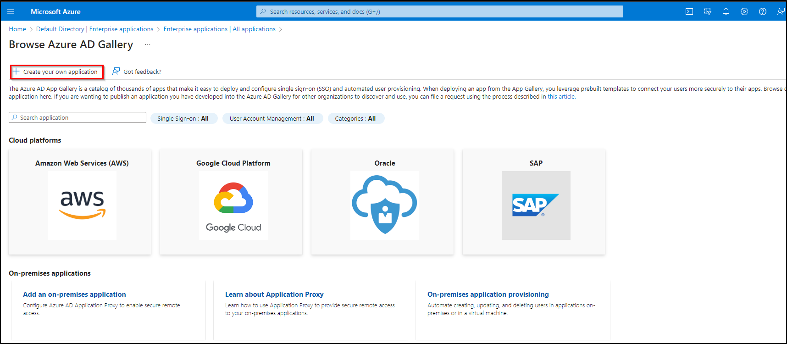
5. Enter a name for the application, e.g., 'Meddbase SSO'
6. Select the Integrate any other application you don't find in the gallery (Non-gallery) option
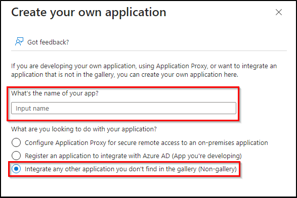
7. Click Create and wait for the application to finish building
8. Click Set up single sign on and select SAML on the next screen
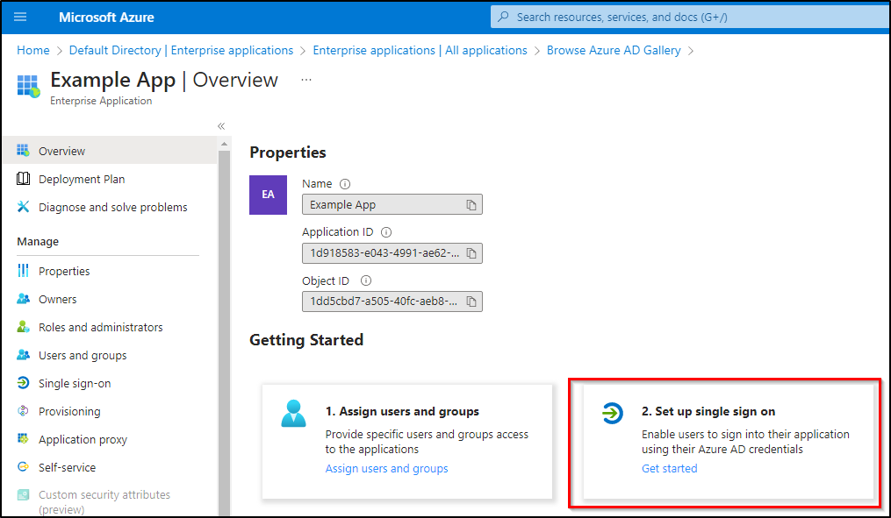
9. Click Edit in the Basic SAML Configuration section
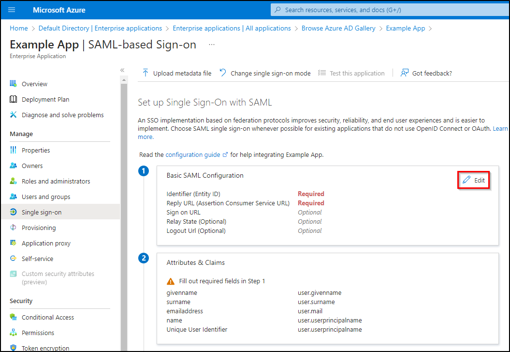
10. Enter your Meddbase chamber domain key* as the Identifier (Entity ID).
*The Chamber Domain Key can be found in your Meddbase chamber under Admin > Configuration > Application > Chamber domain key / user login prefix
11. In the REPLY URL (Assertion Consumer Service URL) field, enter 'Login URL/ssoapp', as per your region below:
Please note: Different regions have different environment URLS. Please ensure you use your relevant region URL:
Ensure there are no spaces before or after the URL.
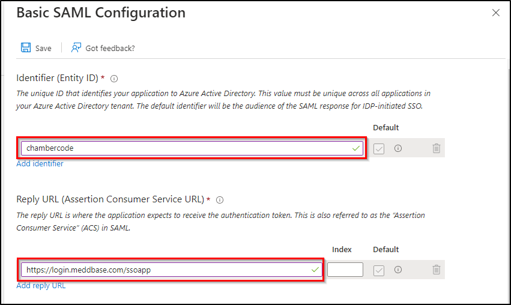
12. Click Edit in the User Attributes & Claims section.
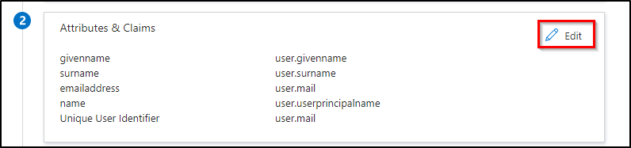
13. Set Source attribute to user.mail
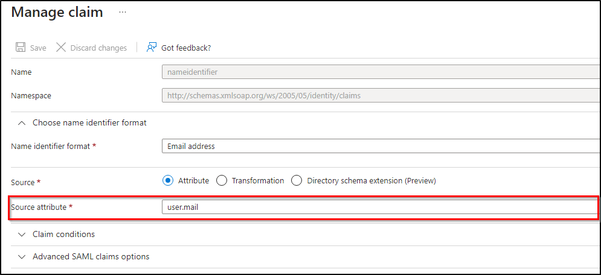
14. Save settings.
15. Under 'SAML Signing Certificate' download Certificate (Base64).
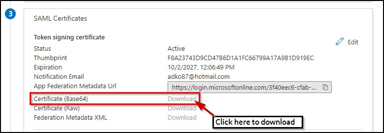
16. Copy the Login URL under Set up ‘Meddbase SSO’.
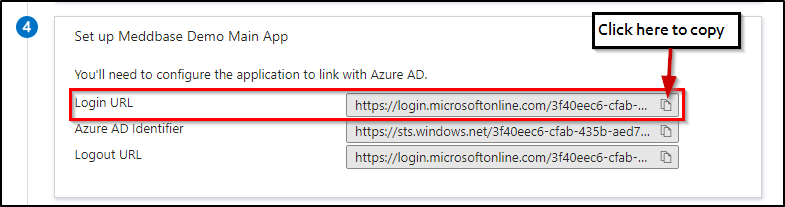
17. Click ‘Users and groups’ under Manage, to grant access to any groups that will be using SSO.
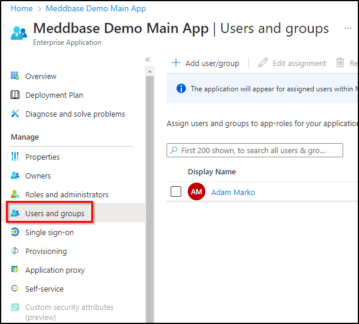
1. Login to Meddbase normally using your Meddbase username and password.
2. From the Start Page navigate to Admin > Configuration > Application.
3. Tick the Enable single sign-on checkbox.
4. Fill in the following details:
Please see an example below of the completed fields.
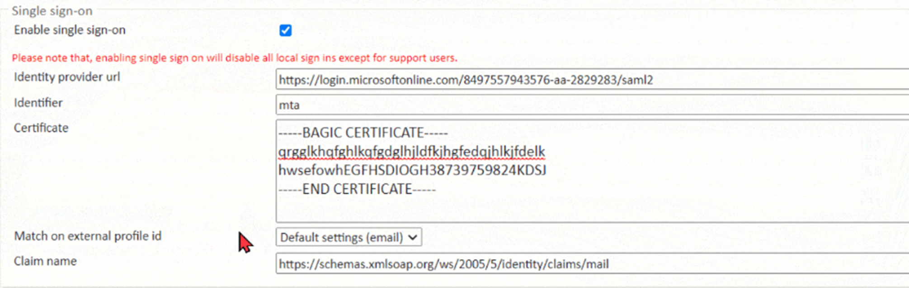
5. Click Save to apply your settings to your chamber.
SSO is now enabled for chamber access and can be tested.
In Azure and logged in with the current user, click Test Application. If successful, you should be logged into Meddbase.
If the test fails, please confirm that you have a profile in Meddbase with the same email address as the account that you’re logged into Azure with.
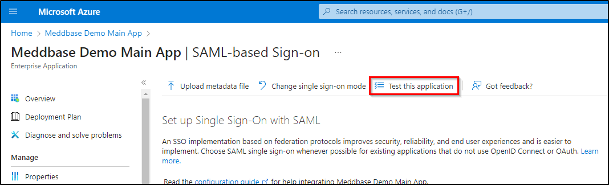
Users added in Step 17 should see a new app on https://myapps.microsoft.com/ with the name set in Step 5 where they can launch Meddbase. This will be the new way to login to Meddbase and all local logins will be disabled.
Once SSO is set up and tested, end users of Meddbase can access the system in one of two ways:
Ensure that "ChamberCode" is replaced with your designated code to successfully log in.